Paso 1
En la aplicacion de World App te vas a "Cartera" y le das en "más"
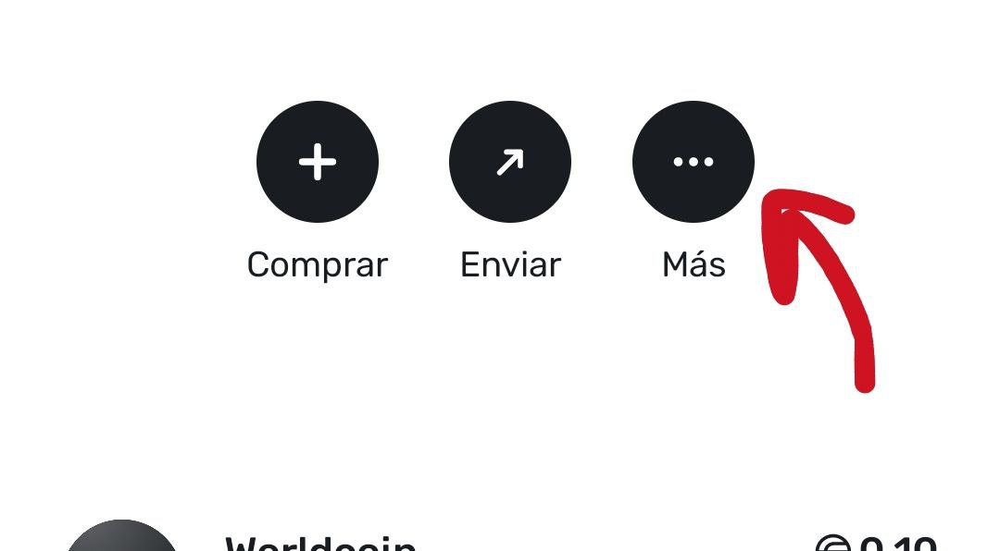
Paso 2
Luego seleccionas "Retirar"
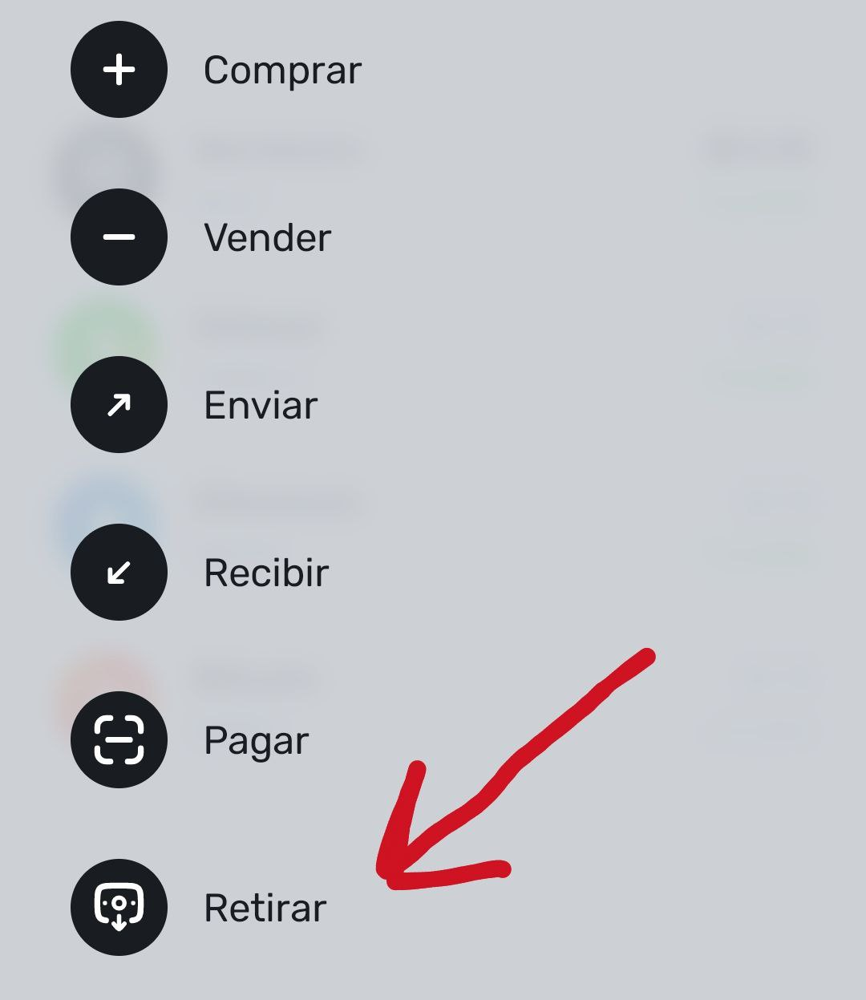
Paso 3
Selecciona tus monedas WorldCoin
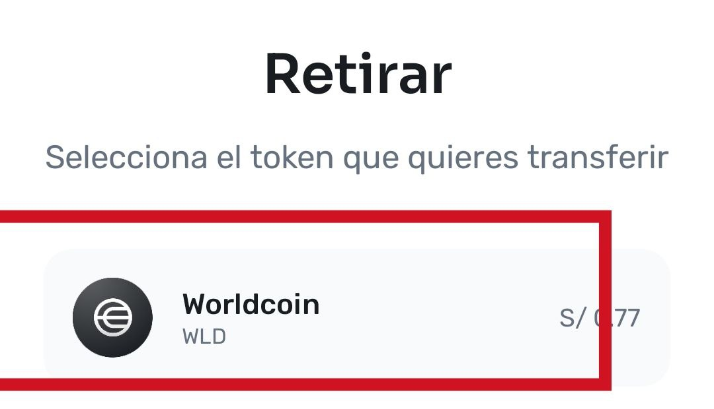
Paso 4
Para poder retirar a Binance debes seleccionar "App de Crypto"
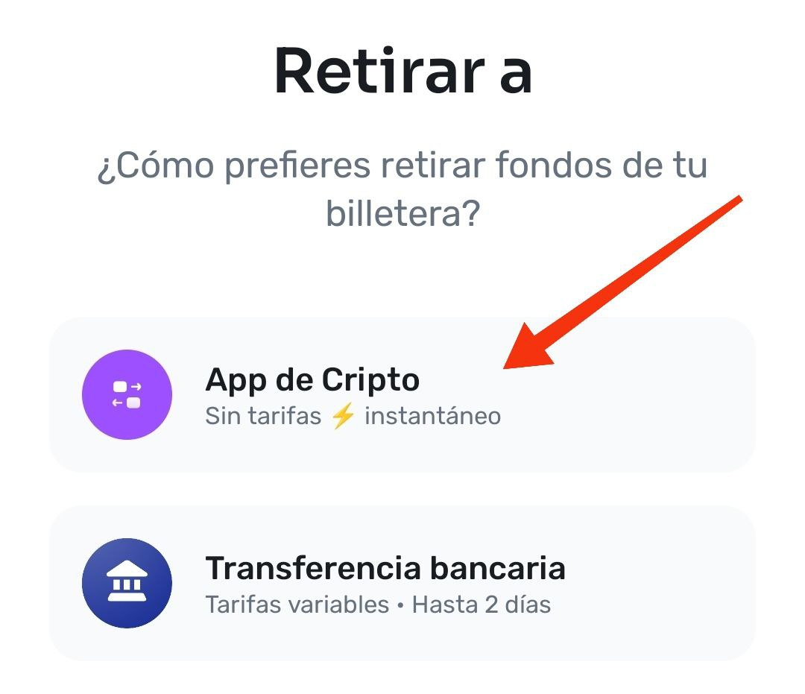
Paso 5
Selecciona "Añadir nueva dirección" copia tu dirección recién creada y lo pegas
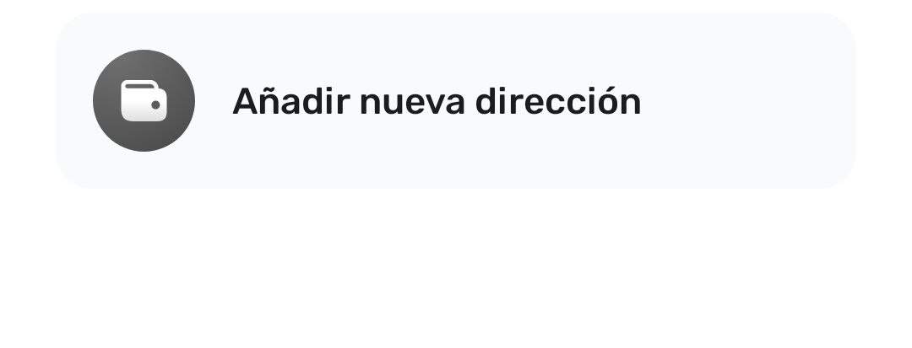
Aquí está tu direccion recién creada de Binance vinculado a tu Yape
Dirección copiada
Paso 6
Selecciona la red de "World Chain"
OJO! importante selecionar esta red, de lo contrario se perderán tus monedas worldCoin
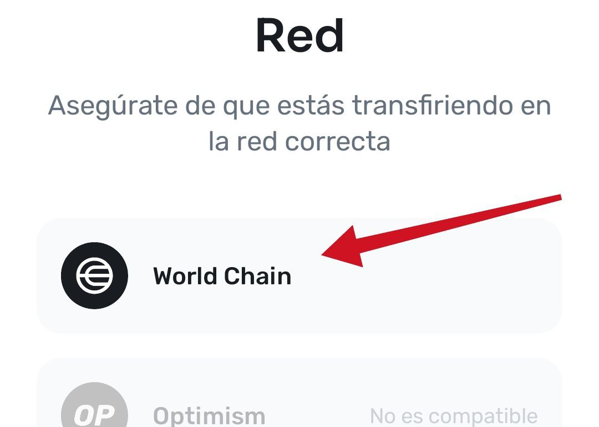
Paso 7
Seleccionar "Binance"
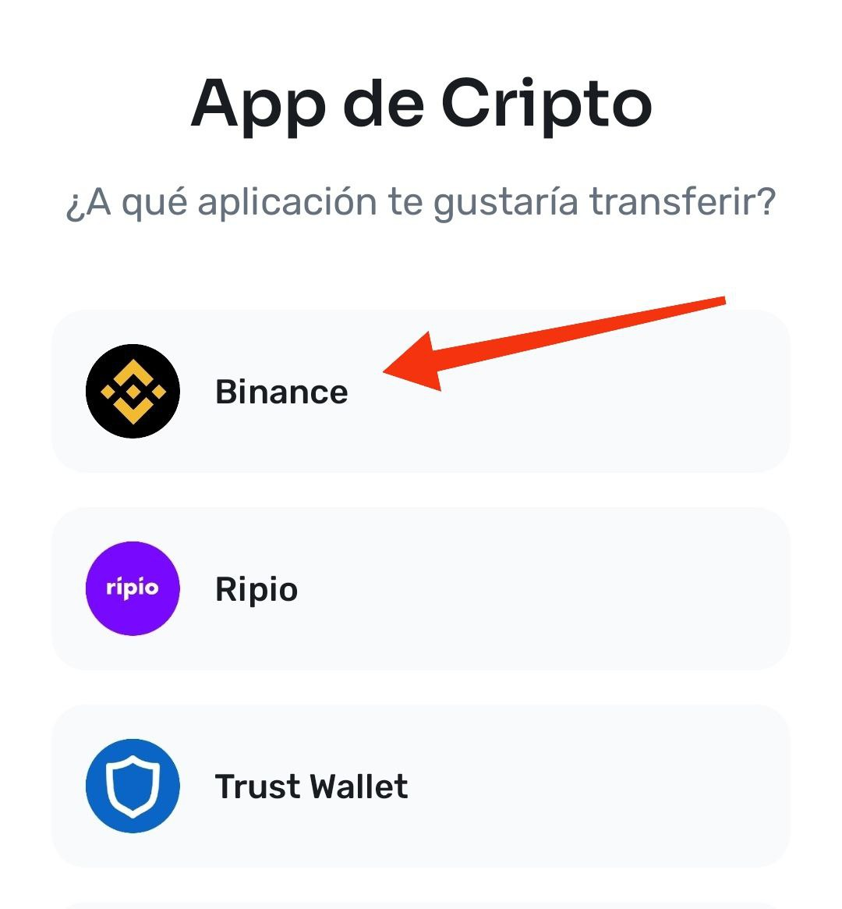
Paso 8
Finalmente pegas aquí tu direccion de Binance recién creada y le das en "continuar"
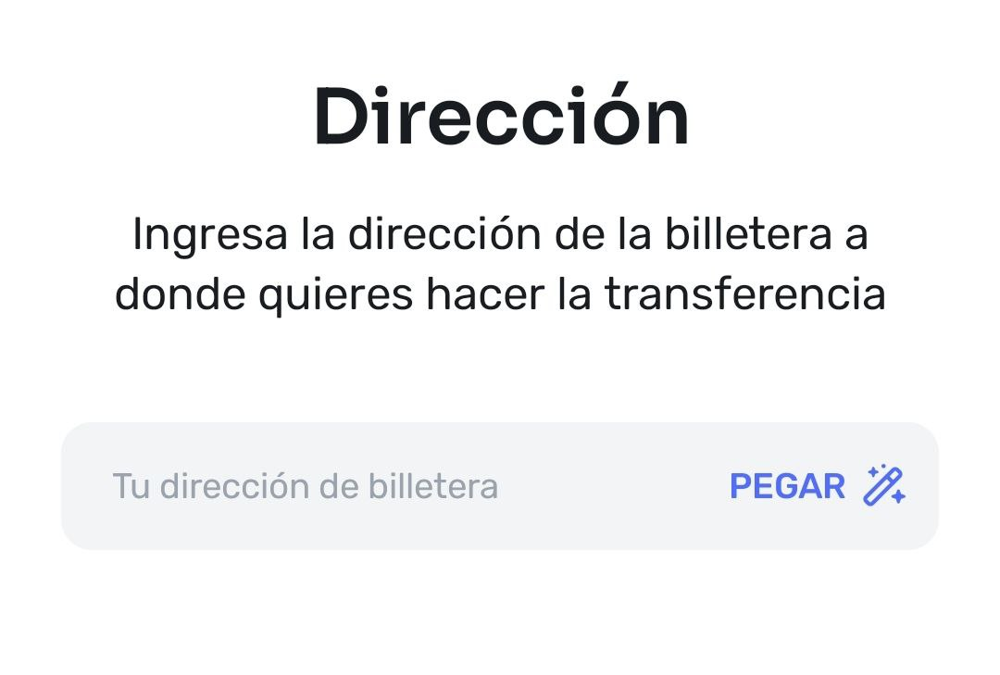
Paso 9
Ingresas el monto (25 ó 15) y le das en "continuar"
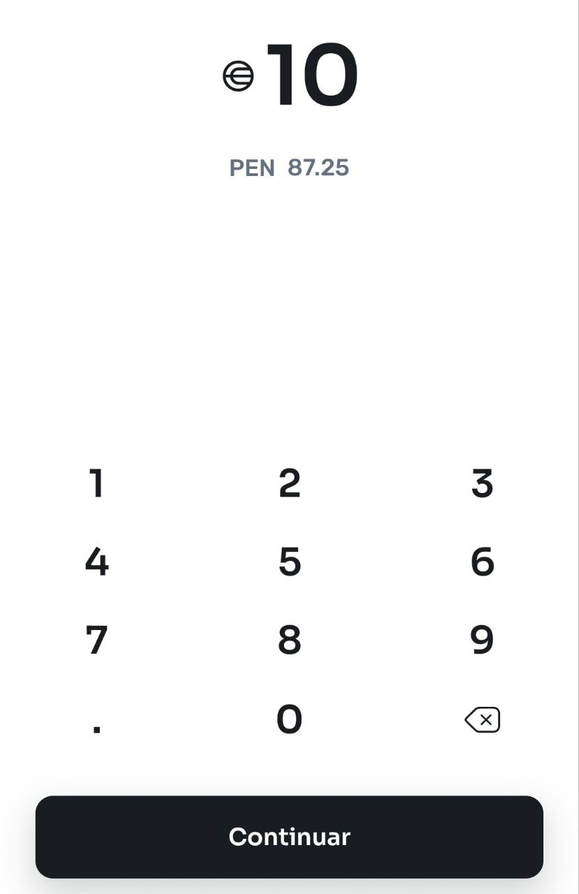
Paso 10
Para finalizar le das en "Confirmar retiro"
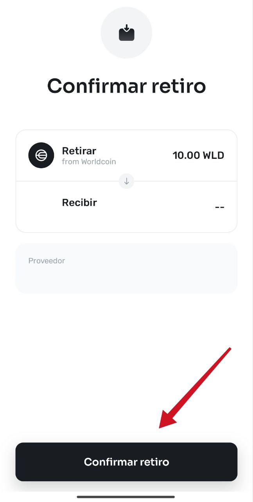
Paso 11
Listo! en 30 minutos aprox te estará llegando las monedas a tu Yape
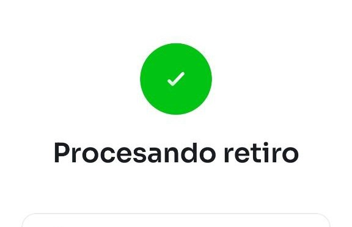